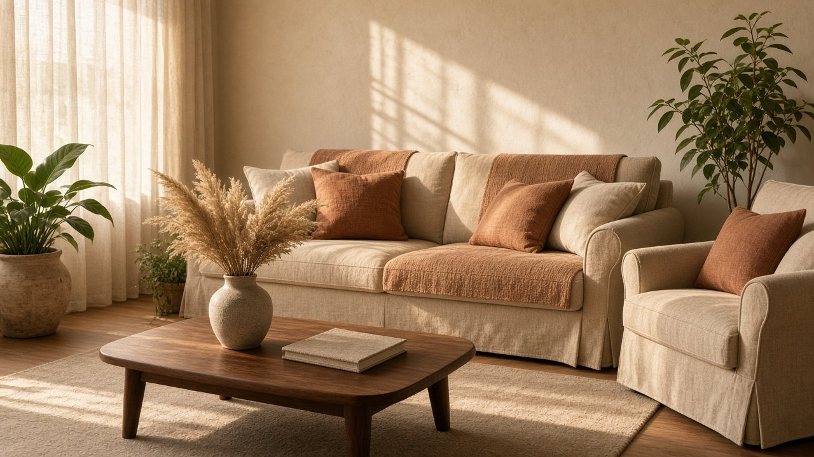

1
Одинаковые title и пустые description
Категории и карточки часто идут с заголовком «Чехлы на мебель — купить». Поисковику трудно понять, где чехол на угловой диван, а где на кресло.

Пример отчёта, данные демонстрационные
Вымышленный магазин «Ателье Чехол» на WordPress и WooCommerce: пошив чехлов на диваны и кресла на заказ. Отчёт показывает формат работы, а не проверку реального сайта клиента.
Сайт индексируется, сертификат установлен, каталог собран. Запас роста большой: шаблонные метатеги, тяжёлые фото и дубли фильтров мешают страницам чехлов выходить в топ по целевым запросам.
Общая оценка демо-сайта. Техника 48, контент 51, семантика 62.
Категории и карточки часто идут с заголовком «Чехлы на мебель — купить». Поисковику трудно понять, где чехол на угловой диван, а где на кресло.
Крупные фото товаров без сжатия и отложенной загрузки. В демо-замере LCP около 4,8 с, есть сдвиг вёрстки при подгрузке галереи.
Цвет, ткань и размер открываются отдельными URL и попадают в индекс. Разметка Product и Offer не заполнена, сниппеты беднее, чем у конкурентов из топа.
Проверка на демонстрационном сайте atelier-chehol-demo.ru. Цифры скорости и счётчики страниц приведены как образец формата отчёта.
Что нашли. Главная и карточка товара отдают галерею из исходников по 2–4 МБ, без srcset и ленивой загрузки ниже первого экрана. Шрифты темы подключаются с задержкой, поверх видео-заставки в шапке.
Как исправить. Сжать и перевести фото в WebP, задать размеры, отложить загрузку ниже экрана, убрать тяжёлую заставку, предварительно загрузить шрифт заголовков и главное фото чехла.
Что нашли. В sitemap около 190 адресов, в индексе заметно больше: туда попали фильтры цвета и ткани, служебные страницы пагинации и корзина в параметрах. Часть новых категорий чехлов на угловые диваны в карту ещё не добавлена.
Как исправить. Оставить в индексе только посадочные категории и карточки. Фильтры закрыть в robots.txt и каноникалом. Обновлять sitemap после публикации товаров.
Что нашли. В robots.txt закрыты /wp-admin и служебные ленты, но открыты ?filter_color=, ?orderby= и поиск. sitemap.xml отдаёт плагин по умолчанию: в нём есть снятые с публикации товары и два адреса 404, нет страницы «чехол на заказ по размерам».
Как исправить. Дописать Disallow для фильтров, сортировок и внутреннего поиска. Почистить карту, включить только канонические URL, настроить автосбор новых категорий.
Что нашли. Открываются и www, и без www, оба с 200. Категория «Еврочехлы» доступна как /evrochehly/ и /product-category/evrochehly/. Пагинация без rel=prev/next и без каноникала на первую страницу.
Как исправить. Оставить одну зеркальную зону с 301, единый ЧПУ категорий WooCommerce, каноникал на основной список, закрыть технические дубли.
Что нашли. При снятии чехла с продажи карточка отдаёт 404. Внешние ссылки и старые кампании ведут в тупик. Цепочка редиректов с http на www, затем на без www, занимает два шага.
Как исправить. Со снятых моделей ставить 301 на близкую категорию или аналог. Сократить редирект до одного шага.
Что нашли. Каталог открывается на телефоне, но кнопки «в корзину» и фильтры мелкие, меню перекрывает первый экран, таблица размеров на карточке уезжает за край. Это бьёт и по удобству, и по INP.
Как исправить. Увеличить зоны нажатия, пересобрать фильтры в выезжающую панель, таблицу размеров свернуть в карточки на узком экране.
Что нашли. Сертификат валидный, основная выдача идёт по HTTPS. На трёх старых карточках галерея всё ещё тянет фото по http: браузер блокирует их как смешанный контент.
Как исправить. Заменить адреса вложений на https и пройтись поиском по контенту медиатеки WordPress. Это точечная правка, оценка раздела в целом положительная.
Что нашли. Тема выводит разметку Product почти пустой: нет цены, наличия, валюты, состояния товара и ссылки на оффер. На категориях разметки нет совсем. В поиске магазин проигрывает сниппетам с ценой.
Как исправить. Заполнить Product и Offer: название, изображение, цену, валюту, наличие, бренд ателье и SKU. Проверить валидатором после выкладки.
Сравнение текущего шаблона и рекомендованной редакции. Формулировки ниже собраны для демо-магазина, их нужно переписать под ассортимент клиента.
Кластеры, вокруг которых стоит собирать посадочные. Частотности ниже помечены как пример: это не выгрузка Вордстата и не оценка реального спроса.
Частотности в этом блоке иллюстративные. В рабочем аудите они снимаются по Вордстату на дату проверки и сверяются с выдачей, без подстановки вымышленных чисел как факта.
Сравнение с типичными игроками выдачи по запросам ниши. Названия компаний не приводим: это обобщённый портрет, а не разбор конкретных магазинов.
Широкая сетка фильтров, аккуратные title и сниппеты с ценой. Слабое место: мало текста про посадку на нестандартные диваны, упор на готовый размерный ряд.
Сильные посадочные под «еврочехол» и быстрые страницы. Мало страниц про пошив по меркам, фото однотипные, без интерьеров.
Живые кейсы «до и после», понятный сценарий замеров. Техника слабее: нет разметки товара, медленная тема, категории свалены в один список.
Порядок работ для демонстрационного магазина. Сроки считаются от передачи доступов к WordPress и исходникам фото.
| Задача | Влияние | Сложность | Срок |
|---|---|---|---|
| Сжать фото, WebP, ленивая загрузка, убрать тяжёлую заставку, поднять LCP | Высокое | Средняя | 2–3 дня |
| Закрыть индексирование фильтров, починить зеркала, sitemap и 301 со старых карточек | Высокое | Средняя | 2 дня |
| Уникальные title, description и H1 по кластерам категорий и ключевых карточек | Высокое | Средняя | 3–4 дня |
| Разметка Product и Offer на карточках, проверка сниппета | Среднее | Низкая | 1 день |
| Тексты категорий и полезные блоки на карточках: ткани, мерки, уход | Высокое | Средняя | 5–7 дней |
| ЧПУ, перелинковка кластеров и блок «с этим чехлом берут» | Среднее | Низкая | 2 дня |
| Доработка мобильных фильтров, таблицы размеров и зон нажатия | Среднее | Средняя | 2 дня |
| Alt у фото каталога и замена http-вложений | Точечное | Низкая | 1 день |